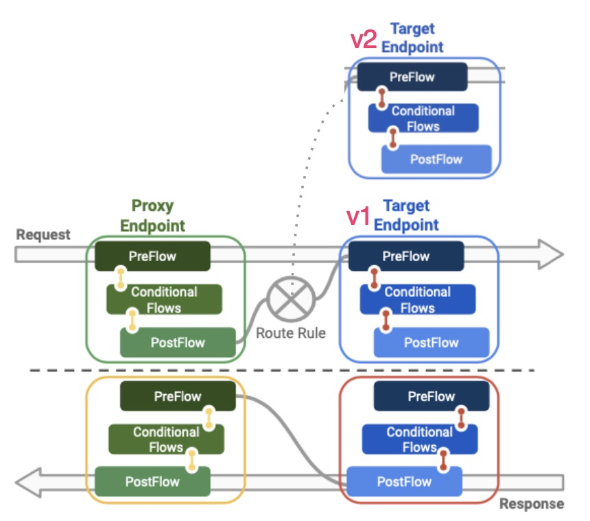

Purpose
Apigee提供一個更強的方法，使用同一個proxy endpoint保留不變，異動的是後端的Target Endpoint，如此可以使route-rule讓流量導向新版v2

Prepare Target Point
step1. deploy Proxy, Product
- script 執行前請先準備好, Apigee account, password, organization 供環境變數使用
1 | wget https://storage.googleapis.com/apigee-quest/scripts/lab13.rewind.sh |
2 | |
3 | ./lab13.rewind.sh |
執行script畫面
step2. Check proxy with lab13
- 檢查script 部署的proxy, product, apps
proxy > done
product > done
Apps > done
step3. Save Apps key
- 保存Apps產生的
key，供後面API測試
Integrate Stackdriver Add Extension Policy to your API
- 整合GCP monitoring，可以把API operation records 送進stackdriver管理
- 操作流程：新增Stackdirver extension: Proxy Endpoints → PreFlow →
+Step - 並改寫以下xml 內官，*記得換你自已專案的名字
"PROJECT_ID_HERE"
1 | <Input><![CDATA[ |
2 | { "logName": "example-log", |
3 | "resource": { |
4 | "type": "global", |
5 | "labels": { |
6 | "project_id": "PROJECT_ID_HERE" |
7 | } |
8 | }, |
9 | "message": {"Action": "{request.verb}", "ClientIP": "{client.ip}", "responsePayload": {response.content}, "Apiproxyname": "{apiproxy.name}"} |
10 | } |
11 | ]]></Input> |
xml 修改示意圖
Provide alternate flow logic for the cloud as a target
- 重點來了，除了原有default target backend之外，在外加
新的backend Target Endpoints新增一個名為cloud(new target endpoint)
step1.
- 請在Target Endpoints → 點選”+” 為其新增一個Target Endpooint
step2.
- 命名：
cloud - Target：http://cloud.hipster.s.apigee.com/products
step3. Check 2nd TargetEndpoint
- 現在可以看到Target Endpoints有二個分別為
defaultcloud
檢視一下新 TargetEndpoint
API會顯示簡單的products ID, description etc.http://cloud.hipster.s.apigee.com/products
step4. Cloud Target Add “Assign Message”
- 要在cloud 上加上policy
"Assign Message"，並且名為Keep Target URL - “Assign Message”目的為 response content 可以清楚Target Endpoint 是來自
cloud
新增policy "Assign Message"
step5. Check
- 對針
"Assign Message"修改policy
編輯 xml
- 透過
Keep Target URL - 其中也使用了
target.copy.queryparams
1 | |
2 | <AssignMessage async="false" continueOnError="false" enabled="true" name="Keep-Target-URL"> |
3 | <DisplayName>Keep Target URL</DisplayName> |
4 | <AssignVariable> |
5 | <Name>target.copy.pathsuffix</Name> |
6 | <Value>false</Value> |
7 | </AssignVariable> |
8 | <AssignVariable> |
9 | <Name>target.copy.queryparams</Name> |
10 | <Value>false</Value> |
11 | </AssignVariable> |
12 | <IgnoreUnresolvedVariables>true</IgnoreUnresolvedVariables> |
13 | <AssignTo createNew="false" transport="http" type="request"/> |
14 | </AssignMessage> |
編輯完的畫面如下
This new policy has rules to prevent changes to the Target Endpoint URL.
step6. default Target Add a “Route rule”
- 請在
Proxy Endpoints.default新增路由新的Target Endpoint(cloud) - 詳細路徑
*Proxy Endpoint> default > PreFlow
step7. check 2 RouteRule
RouteRule:- cloud 新增的
verifyapikey.verify-api-key.platform equals "cloud"規擇，可根據API key的不同導向至不同的Target Endpoint- default 即有的
Overview
新增完cloud，請確認有2個Target Endpoints存在
step8. Deployment to test
- 以上的policy 新增修改，請部署至 test 環境
- 另外也請確認latest revision.
Flag the developer app to route its calls to the cloud
Apps Custom Attributes 可以增加key:value值來辨識背後的API backend
- 請至Apps:
lab13-Product-App - 編輯 >
Custom Attributes- Name:
platform - Value:
cloud
- Name:
step1. edit
step2. Custom Attributes
- Key-value pairs值可更細微對API Target backend控制
Create a new app that remains routed to the legacy backend
為了實驗不同的API key 導向不同的Target Endpoint，因此我們新增第二個Apps
- 請至 Publish > Apps 命名為
Legacy App - Product 同樣納入
lab13-cataloh-Products
step1. legacy App
step2. Get 2nd key
- 取得新的Apps Key
API Diagnostics: Trace Tool
以上的準備都是為此的測試，這邊請先收錄二隻Apps key，而Target Endpoint目標都是同一個
step1. Track calls with Trace
- Develop > API Proxies > lab13-catalog proxy
- /products?apikey=[API-KEY -01]
- /products?apikey=[API-KEY -02]
1 | #key1 |
2 | https://joeuang-eval-test.apigee.net/lab13-catalog/v1/products?apikey=YiXXXXXXtN |
3 | |
4 | #key2 |
5 | https://joehuang-eval-test.apigee.net/lab13-catalog/v1/products?apikey=bcLXXXXXX5ih |
step2. 1st API Key as the value of the apikey query parameter.
- 第一把 API Key的測試，得到 response 200
- 且在Target Requests 得到
"Keep Target URL"，代並這次的requst是打cloud
問題#1 為什麼Apps custome attributes 可以判斷不同的Target Endpoints？
- 因為我們有
condition flow其中expression 可以幫忙比對content內容
還記得剛才設定的custome attributes 這個flag，就是透過condition flow幫忙比對的
step3. 2nd API Key as the value of the apikey query parameter.
- 第二把 API Key的測試，得到同樣得到 response 200
- 但是這次的Target Endpoint是不一樣的，請注意是”default”
結論
服務在更版時候，我們常用藍綠部署(Blue Green Deployment)，可以保證系統在不間斷提供服務的情況下，上新版的部署方式，一般會在Load balance上實作。現在我們了解Apigee policy 方法可以實作multiple Target，如此我們就可以鎖定同樣的proxy endpoint。透過修改APIM policy增加不同的API Endpoint，可將流量導到不同的版本的API backend(default, cloud)。方法是透過Condition flow 偵查不同組的API Key (key1, key2)，可以將流量轉發到不同的服務上(Target Endpoints)。
此作法可較過去更有彈性，怎麼說呢？因為我們二邊的Target Endpoints，不僅都保留住，只要不同的API key，都能還有通往到目的地。如果你是developer, system administrator 對APIM 有興趣妨可以考慮更彈的管理版本部署方法。